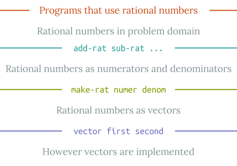

In section 1.1.8, we noted that a procedure used as an element in creating a more complex procedure could be regarded not only as a collection of particular operations but also as a procedural abstraction. That is, the details of how the procedure was implemented could be suppressed, and the particular procedure itself could be replaced by any other procedure with the same overall behavior. In other words, we could make an abstraction that would separate the way the procedure would be used from the details of how the procedure would be implemented in terms of more primitive procedures. The analogous notion for compound data is called data abstraction. Data abstraction is a methodology that enables us to isolate how a compound data object is used from the details of how it is constructed from more primitive data objects.
The basic idea of data abstraction is to structure the programs that are to use compound data objects so that they operate on "abstract data." That is, our programs should use data in such a way as to make no assumptions about the data that are not strictly necessary for performing the task at hand. At the same time, a "concrete" data representation is defined independent of the programs that use the data. The interface between these two parts of our system will be a set of procedures, called selectors and constructors, that implement the abstract data in terms of the concrete representation. To illustrate this technique, we will consider how to design a set of procedures for manipulating rational numbers.
Suppose we want to do arithmetic with rational numbers. We want to be able to add, subtract, multiply, and divide them and to test whether two rational numbers are equal.
Let us begin by assuming that we already have a way of constructing a rational number from a numerator and a denominator. We also assume that, given a rational number, we have a way of extracting (or selecting) its numerator and its denominator. Let us further assume that the constructor and selectors are available as procedures:
(make-rat <-n-> <-d->) returns the rational number whose numerator is the integer <-n-> and whose denominator is the integer <-d->.
(numer <-x->) returns the numerator of the rational number <-x->.
(denom <-x->) returns the denominator of the rational number <-x->.
We are using here a powerful strategy of synthesis: wishful thinking. We haven't yet said how a rational number is represented, or how the procedures numer, denom, and make-rat should be implemented. Even so, if we did have these three procedures, we could then add, subtract, multiply, divide, and test equality by using the following relations:
\[ \begin{array}{lcl} \frac{n_{1}}{d_{1}} + \frac{n_{2}}{d_{2}} & = & \frac{n_{1}d_{2} + n_{2}d_{1}}{d_{1}d_{2}} \\ \frac{n_{1}}{d_{1}} - \frac{n_{2}}{d_{2}} & = & \frac{n_{1}d_{2} - n_{2}d_{1}}{d_{1}d_{2}} \\ \frac{n_{1}}{d_{1}} \cdot \frac{n_{2}}{d_{2}} & = & \frac{n_{1}n_{2}}{d_{1}d_{2}} \\ \frac{n_{1}/d_{1}}{n_{2}/d_{2}} & = & \frac{n_{1}d_{2}}{d_{1}n_{2}} \\ \frac{n_1}{d_1} = \frac{n_2}{d_2} & \text{ if and only if } & n_1d_2 = n_2d_1 \end{array} \]
We can express these rules as procedures:
(defn add-rat [x y]
(make-rat (+ (* (numer x) (denom y))
(* (numer y) (denom x)))
(* (denom x) (denom y))))
(defn sub-rat [x y]
(make-rat (- (* (numer x) (denom y))
(* (numer y) (denom x)))
(* (denom x) (denom y))))
(defn mul-rat [x y]
(make-rat (* (numer x) (numer y))
(* (denom x) (denom y))))
(defn div-rat [x y]
(make-rat (* (numer x) (denom y))
(* (denom x) (numer y))))
(defn equal-rat? [x y]
(= (* (numer x) (denom y))
(* (numer y) (denom x))))
Now we have the operations on rational numbers defined in terms of the selector and constructor procedures numer, denom, and make-rat. But we haven't yet defined these. What we need is some way to glue together a numerator and a denominator to form a rational number.
To enable us to implement the concrete level of our data abstraction, Clojure provides a compound structure called a vector, which can be constructed with the primitive procedure vector. This procedure takes any number of arguments and returns a compound data object that contains the arguments as parts. Given a vector of two elements, we can extract the parts using the primitive procedures first and second. Thus, we can use vector, first, and second as follows:
(def x (vector 1 2))
(first x)
1
(second x)
2
Earlier Lisp dialects, including Scheme, provide a similar compound structure called a pair, constructed with the primitive procedure cons. As the name implies, pairs contain only two arguments as parts. The primitive procedures car and cdr extract the individual elements.2 For now, we'll carry on with vectors, but later in the chapter, we'll add these procedures to Clojure.
We can also use square brackets to construct a vector. This makes vectors easier to read, but is just syntactic sugar for the vector procedure:
(def x [1 2])
(first x)
1
(second x)
2
Notice that a vector is a data object that can be given a name and manipulated, just like a primitive data object. Moreover, vector (or square brackets) can be used to form vectors whose elements are vectors, and so on:
(def x (vector 1 2))
(def y [3 4])
(def z [x y])
(first (first z))
1
(first (second z))
3
In section 2.2 we will see how this ability to combine vectors means that vectors can be used as general-purpose building blocks to create all sorts of complex data structures. The single compound-data primitive vector, implemented by the procedures vector, first, and second, is the only glue we need.
Vectors offer a natural way to complete the rational-number system. Simply represent a rational number as a pair of two integers: a numerator and a denominator. Then make-rat, numer, and denom are readily implemented as follows:3
(defn make-rat [n d] [n d])
(defn numer [x] (first x))
(defn denom [x] (second x))
Also, in order to display the results of our computations, we can print rational numbers by printing the numerator, a slash, and the denominator:4
(defn print-rat [x]
(print (numer x))
(print "/")
(print (denom x))
(newline))
Now we can try our rational-number procedures:
(def one-half (make-rat 1 2))
(print-rat one-half)
1/2
(def one-third (make-rat 1 3))
(print-rat (add-rat one-half one-third))
5/6
(print-rat (mul-rat one-half one-third))
1/6
(print-rat (add-rat one-third one-third))
6/9
As the final example shows, our rational-number implementation does not reduce rational numbers to lowest terms. We can remedy this by changing make-rat. If we have a gcd procedure like the one in section 1.2.5 that produces the greatest common divisor of two integers, we can use gcd to reduce the numerator and the denominator to lowest terms before constructing the pair:
(defn make-rat [n d]
(let [g (gcd n d)]
[(/ n g) (/ d g)])
Now we have
(print-rat (add-rat one-third one-third))
2/3
as desired. This modification was accomplished by changing the constructor make-rat without changing any of the procedures (such as add-rat and mul-rat) that implement the actual operations.
Exercise 2.1. Define a better version of make-rat that handles both positive and negative arguments. Make-rat should normalize the sign so that if the rational number is positive, both the numerator and denominator are positive, and if the rational number is negative, only the numerator is negative.
Before continuing with more examples of compound data and data abstraction, let us consider some of the issues raised by the rational-number example. We defined the rational-number operations in terms of a constructor make-rat and selectors numer and denom. In general, the underlying idea of data abstraction is to identify for each type of data object a basic set of operations in terms of which all manipulations of data objects of that type will be expressed, and then to use only those operations in manipulating the data.
We can envision the structure of the rational-number system as shown in figure 2.1. The horizontal lines represent abstraction barriers that isolate different "levels" of the system. At each level, the barrier separates the programs (above) that use the data abstraction from the programs (below) that implement the data abstraction. Programs that use rational numbers manipulate them solely in terms of the procedures supplied "for public use" by the rational-number package: add-rat, sub-rat, mul-rat, div-rat, and equal-rat?. These, in turn, are implemented solely in terms of the constructor and selectors make-rat, numer, and denom, which themselves are implemented in terms of vectors. The details of how vectors are implemented are irrelevant to the rest of the rational-number package so long as pairs can be manipulated by the use of vector, first, and second. In effect, procedures at each level are the interfaces that define the abstraction barriers and connect the different levels.

Figure 2.1: Data-abstraction barriers in the rational-number package.
This simple idea has many advantages. One advantage is that it makes programs much easier to maintain and to modify. Any complex data structure can be represented in a variety of ways with the primitive data structures provided by a programming language. Of course, the choice of representation influences the programs that operate on it; thus, if the representation were to be changed at some later time, all such programs might have to be modified accordingly. This task could be time-consuming and expensive in the case of large programs unless the dependence on the representation were to be confined by design to a very few program modules.
For example, an alternate way to address the problem of reducing rational numbers to lowest terms is to perform the reduction whenever we access the parts of a rational number, rather than when we construct it. This leads to different constructor and selector procedures:
(defn make-rat [n d]
[n d])
(defn numer [x]
(let [g (gcd (first x) (second x))]
(/ (first x) g)))
(defn denom [x]
(let [g (gcd (first x) (second x))]
(/ (second x) g)))
The difference between this implementation and the previous one lies in when we compute the gcd. If in our typical use of rational numbers we access the numerators and denominators of the same rational numbers many times, it would be preferable to compute the gcd when the rational numbers are constructed. If not, we may be better off waiting until access time to compute the gcd. In any case, when we change from one representation to the other, the procedures add-rat, sub-rat, and so on do not have to be modified at all.
Constraining the dependence on the representation to a few interface procedures helps us design programs as well as modify them, because it allows us to maintain the flexibility to consider alternate implementations. To continue with our simple example, suppose we are designing a rational-number package and we can't decide initially whether to perform the gcd at construction time or at selection time. The data-abstraction methodology gives us a way to defer that decision without losing the ability to make progress on the rest of the system.
Exercise 2.2. Consider the problem of representing line segments in a plane. Each segment is represented as a pair of points: a starting point and an ending point. Define a constructor make-segment and selectors start-segment and end-segment that define the representation of segments in terms of points. Furthermore, a point can be represented as a pair of numbers: the x coordinate and the y coordinate. Accordingly, specify a constructor make-point and selectors x-point and y-point that define this representation. Finally, using your selectors and constructors, define a procedure midpoint-segment that takes a line segment as argument and returns its midpoint (the point whose coordinates are the average of the coordinates of the endpoints). To try your procedures, you'll need a way to print points:
(defn print-point [point]
(print "(")
(print (x-point point))
(print ",")
(print (y-point point))
(print ")")
(println))
Exercise 2.3. Implement a representation for rectangles in a plane. (Hint: You may want to make use of exercise 2.2.) In terms of your constructors and selectors, create procedures that compute the perimeter and the area of a given rectangle. Now implement a different representation for rectangles. Can you design your system with suitable abstraction barriers, so that the same perimeter and area procedures will work using either representation?
We began the rational-number implementation in section 2.1.1 by implementing the rational-number operations add-rat, sub-rat, and so on in terms of three unspecified procedures: make-rat, numer, and denom. At that point, we could think of the operations as being defined in terms of data objects -- numerators, denominators, and rational numbers -- whose behavior was specified by the latter three procedures.
But exactly what is meant by data? It is not enough to say "whatever is implemented by the given selectors and constructors." Clearly, not every arbitrary set of three procedures can serve as an appropriate basis for the rational-number implementation. We need to guarantee that, if we construct a rational number x from a pair of integers n and d, then extracting the numer and the denom of x and dividing them should yield the same result as dividing n by d. In other words, make-rat, numer, and denom must satisfy the condition that, for any integer n and any non-zero integer d, if x is (make-rat n d), then
\[ \frac{(\text{numer } x)}{(\text{denom } x)} = \frac{n}{d} \]
In fact, this is the only condition make-rat, numer, and denom must fulfill in order to form a suitable basis for a rational-number representation. In general, we can think of data as defined by some collection of selectors and constructors, together with specified conditions that these procedures must fulfill in order to be a valid representation.5
This point of view can serve to define not only "high-level" data objects, such as rational numbers, but lower-level objects as well. Consider the notion of a vector, which we used in order to define our rational numbers. We never actually said what a vector was, only that the language supplied procedures vector, first, and second for operating on vectors. But the only thing we need to know about these three operations is that if we glue two objects together using vector we can retrieve the objects using first and second. That is, the operations satisfy the condition that, for any objects x and y, if z is [x y] then (first z) is x and (second z) is y. Indeed, we mentioned that these three procedures are included as primitives in our language. However, any triple of procedures that satisfies the above condition can be used as the basis for implementing pairs. This point is illustrated strikingly by the fact that we could implement vector, first, and second without using any data structures at all but only using procedures. Here are the definitions:
(defn vector [x y]
(defn dispatch [m]
(cond (= m 0) x
(= m 1) y
:else (throw (Exception. "Argument not 0 or 1" ))))
dispatch)
(defn first [z] (z 0))
(defn second [z] (z 1))
This use of procedures corresponds to nothing like our intuitive notion of what data should be. Nevertheless, all we need to do to show that this is a valid way to represent pairs is to verify that these procedures satisfy the condition given above.
The subtle point to notice is that the value returned by (vector x y) is a procedure -- namely the internally defined procedure dispatch, which takes one argument and returns either x or y depending on whether the argument is 0 or 1. Correspondingly, (first z) is defined to apply z to 0. Hence, if z is the procedure formed by (vector x y), then z applied to 0 will yield x. Thus, we have shown that (first (vector x y)) yields x, as desired. Similarly, (second (vector x y)) applies the procedure returned by (vector x y) to 1, which returns y. Therefore, this procedural implementation of pairs is a valid implementation, and if we access pairs using only vector, first, and second we cannot distinguish this implementation from one that uses "real" data structures.
Let's use this to add pairs, plus the procedures cons, car, and cdr to Clojure:
(defn cons [x y]
(defn dispatch [m]
(cond (= m 0) x
(= m 1) y
:else (throw (Exception. "Argument not 0 or 1" ))))
dispatch)
(defn car [z] (z 0))
(defn cdr [z] (z 1))
The point of exhibiting the procedural representation of pairs is not that our language works this way (Clojure's data structures are different from other Lisps, and Scheme implements pairs directly) but that it could work this way. The procedural representation, although obscure, is a perfectly adequate way to represent pairs, since it fulfills the only conditions that pairs need to fulfill. This example also demonstrates that the ability to manipulate procedures as objects automatically provides the ability to represent compound data. This may seem a curiosity now, but procedural representations of data will play a central role in our programming repertoire. This style of programming is often called message passing, and we will be using it as a basic tool in chapter 3 when we address the issues of modeling and simulation.
Exercise 2.4. Here is an alternative procedural representation of pairs. For this representation, verify that (first (vector x y)) yields x for any objects x and y.
(defn vector [x y]
(fn [m] (m x y)))
(defn first [z]
(z (fn [p q] p)))
What is the corresponding definition of second? (Hint: To verify that this works, make use of the substitution model of section 1.1.5.)
Exercise 2.5. Show that we can represent pairs of nonnegative integers using only numbers and arithmetic operations if we represent the pair a and b as the integer that is the product \( 2^a3^b \). Give the corresponding definitions of the procedures vector, first, and second.
Exercise 2.6. In case representing pairs as procedures wasn't mind-boggling enough, consider that, in a language that can manipulate procedures, we can get by without numbers (at least insofar as nonnegative integers are concerned) by implementing 0 and the operation of adding 1 as
(def zero (fn [f] (fn [x] x)))
(def add-1 [n]
(fn [f] (fn [x] (f ((n f) x)))))
This representation is known as Church numerals, after its inventor, Alonzo Church, the logician who invented the \( \lambda \) calculus.
Define one and two directly (not in terms of zero and add-1). (Hint: Use substitution to evaluate (add-1 zero)). Give a direct definition of the addition procedure + (not in terms of repeated application of add-1).
Alyssa P. Hacker is designing a system to help people solve engineering problems. One feature she wants to provide in her system is the ability to manipulate inexact quantities (such as measured parameters of physical devices) with known precision, so that when computations are done with such approximate quantities the results will be numbers of known precision.
Electrical engineers will be using Alyssa's system to compute electrical quantities. It is sometimes necessary for them to compute the value of a parallel equivalent resistance \( R_p \) of two resistors \( R_1 \) and \( R_2 \) using the formula
\[ R_p = \frac{1}{1/R_1 + 1/R_2} \]
Resistance values are usually known only up to some tolerance guaranteed by the manufacturer of the resistor. For example, if you buy a resistor labeled "6.8 ohms with 10% tolerance" you can only be sure that the resistor has a resistance between 6.8 - 0.68 = 6.12 and 6.8 + 0.68 = 7.48 ohms. Thus, if you have a 6.8-ohm 10% resistor in parallel with a 4.7-ohm 5% resistor, the resistance of the combination can range from about 2.58 ohms (if the two resistors are at the lower bounds) to about 2.97 ohms (if the two resistors are at the upper bounds).
Alyssa's idea is to implement "interval arithmetic" as a set of arithmetic operations for combining "intervals" (objects that represent the range of possible values of an inexact quantity). The result of adding, subtracting, multiplying, or dividing two intervals is itself an interval, representing the range of the result.
Alyssa postulates the existence of an abstract object called an "interval" that has two endpoints: a lower bound and an upper bound. She also presumes that, given the endpoints of an interval, she can construct the interval using the data constructor make-interval. Alyssa first writes a procedure for adding two intervals. She reasons that the minimum value the sum could be is the sum of the two lower bounds and the maximum value it could be is the sum of the two upper bounds:
(defn add-interval [x y]
(make-interval (+ (lower-bound x) (lower-bound y))
(+ (upper-bound x) (upper-bound y))))
Alyssa also works out the product of two intervals by finding the minimum and the maximum of the products of the bounds and using them as the bounds of the resulting interval. (Min and max are primitives that find the minimum or maximum of any number of arguments.)
(defn mul-interval [x y]
(let [p1 (* (lower-bound x) (lower-bound y))
p2 (* (lower-bound x) (upper-bound y))
p3 (* (upper-bound x) (lower-bound y))
p4 (* (upper-bound x) (upper-bound y))]
(make-interval (min p1 p2 p3 p4)
(max p1 p2 p3 p4))))
To divide two intervals, Alyssa multiplies the first by the reciprocal of the second. Note that the bounds of the reciprocal interval are the reciprocal of the upper bound and the reciprocal of the lower bound, in that order.
(defn div-interval [x y]
(mul-interval x
(make-interval (/ 1.0 (upper-bound y))
(/ 1.0 (lower-bound y)))))
Exercise 2.7. Alyssa's program is incomplete because she has not specified the implementation of the interval abstraction. Here is a definition of the interval constructor:
(defn make-interval [a b]
[a b])
Define selectors upper-bound and lower-bound to complete the implementation.
Exercise 2.8. Using reasoning analogous to Alyssa's, describe how the difference of two intervals may be computed. Define a corresponding subtraction procedure, called sub-interval.
Exercise 2.9. The width of an interval is half of the difference between its upper and lower bounds. The width is a measure of the uncertainty of the number specified by the interval. For some arithmetic operations the width of the result of combining two intervals is a function only of the widths of the argument intervals, whereas for others the width of the combination is not a function of the widths of the argument intervals. Show that the width of the sum (or difference) of two intervals is a function only of the widths of the intervals being added (or subtracted). Give examples to show that this is not true for multiplication or division.
Exercise 2.10. Ben Bitdiddle, an expert systems programmer, looks over Alyssa's shoulder and comments that it is not clear what it means to divide by an interval that spans zero. Modify Alyssa's code to check for this condition and to signal an error if it occurs.
Exercise 2.11. In passing, Ben also cryptically comments: "By testing the signs of the endpoints of the intervals, it is possible to break mul-interval into nine cases, only one of which requires more than two multiplications." Rewrite this procedure using Ben's suggestion.
After debugging her program, Alyssa shows it to a potential user, who complains that her program solves the wrong problem. He wants a program that can deal with numbers represented as a center value and an additive tolerance; for example, he wants to work with intervals such as \( 3.5 \pm 0.15 \) rather than [3.35, 3.65]. Alyssa returns to her desk and fixes this problem by supplying an alternate constructor and alternate selectors:
(defn make-center-width [c w]
(make-interval (- c w) (+ c w)))
(defn center [i]
(/ (+ (lower-bound i) (upper-bound i)) 2))
(defn width [i]
(/ (- (upper-bound i) (lower-bound i)) 2))
Unfortunately, most of Alyssa's users are engineers. Real engineering situations usually involve measurements with only a small uncertainty, measured as the ratio of the width of the interval to the midpoint of the interval. Engineers usually specify percentage tolerances on the parameters of devices, as in the resistor specifications given earlier.
Exercise 2.12. Define a constructor make-center-percent that takes a center and a percentage tolerance and produces the desired interval. You must also define a selector percent that produces the percentage tolerance for a given interval. The center selector is the same as the one shown above.
Exercise 2.13. Show that under the assumption of small percentage tolerances there is a simple formula for the approximate percentage tolerance of the product of two intervals in terms of the tolerances of the factors. You may simplify the problem by assuming that all numbers are positive.
After considerable work, Alyssa P. Hacker delivers her finished system. Several years later, after she has forgotten all about it, she gets a frenzied call from an irate user, Lem E. Tweakit. It seems that Lem has noticed that the formula for parallel resistors can be written in two algebraically equivalent ways:
\[ \frac{R_1R_2}{R_1 + R_2} \]
and
\[ \frac{1}{1/R_1 + 1/R_2} \]
He has written the following two programs, each of which computes the parallel-resistors formula differently:
(defn par1 [r1 r2]
(div-interval (mul-interval r1 r2)
(add-interval r1 r2)))
(defn par2 [r1 r2]
(let [one (make-interval 1 1)]
(div-interval one
(add-interval (div-interval one r1)
(div-interval one r2)))))
Lem complains that Alyssa's program gives different answers for the two ways of computing. This is a serious complaint.
Exercise 2.14. Demonstrate that Lem is right. Investigate the behavior of the system on a variety of arithmetic expressions. Make some intervals A and B, and use them in computing the expressions A/A and A/B. You will get the most insight by using intervals whose width is a small percentage of the center value. Examine the results of the computation in center-percent form (see exercise 2.12).
Exercise 2.15. Eva Lu Ator, another user, has also noticed the different intervals computed by different but algebraically equivalent expressions. She says that a formula to compute with intervals using Alyssa's system will produce tighter error bounds if it can be written in such a form that no variable that represents an uncertain number is repeated. Thus, she says, par2 is a "better" program for parallel resistances than par1. Is she right? Why?
Exercise 2.16. Explain, in general, why equivalent algebraic expressions may lead to different answers. Can you devise an interval-arithmetic package that does not have this shortcoming, or is this task impossible? (Warning: This problem is very difficult.)
↩ The name cons stands for "construct." The names car and cdr derive from the original implementation of Lisp on the IBM 704. That machine had an addressing scheme that allowed one to reference the "address" and "decrement" parts of a memory location. Car stands for "Contents of Address part of Register" and cdr (pronounced "could-er") stands for "Contents of Decrement part of Register."
↩ Another way to define the selectors and constructor is
(def make-rat vector)
(def numer first)
(def denom second)
The first definition associates the name make-rat with the value of the expression vector, which is the primitive procedure that constructs vectors. Thus make-rat and vector are names for the same primitive constructor.
Defining selectors and constructors in this way is efficient: Instead of make-rat calling vector, make-rat is vector, so there is only one procedure called, not two, when make-rat is called. On the other hand, doing this defeats debugging aids that trace procedure calls or put breakpoints on procedure calls: You may want to watch make-rat being called, but you certainly don't want to watch every call to vector.
We have chosen not to use this style of definition in this book.
↩ Print is the Clojure primitive for printing data. The Clojure primitive newline starts a new line for printing. Neither of these procedures returns a useful value, so in the uses of print-rat below, we show only what print-
rat prints, not what the interpreter prints as the value returned by print-
rat.
↩ Surprisingly, this idea is very difficult to formulate rigorously. There are two approaches to giving such a formulation. One, pioneered by C. A. R. Hoare (1972), is known as the method of abstract models. It formalizes the "procedures plus conditions" specification as outlined in the rational- number example above. Note that the condition on the rational-number representation was stated in terms of facts about integers (equality and division). In general, abstract models define new kinds of data objects in terms of previously defined types of data objects. Assertions about data objects can therefore be checked by reducing them to assertions about previously defined data objects. Another approach, introduced by Zilles at MIT, by Goguen, Thatcher, Wagner, and Wright at IBM (see Thatcher, Wagner, and Wright 1978), and by Guttag at Toronto (see Guttag 1977), is called algebraic specification. It regards the "procedures" as elements of an abstract algebraic system whose behavior is specified by axioms that correspond to our "conditions," and uses the techniques of abstract algebra to check assertions about data objects. Both methods are surveyed in the paper by Liskov and Zilles (1975).